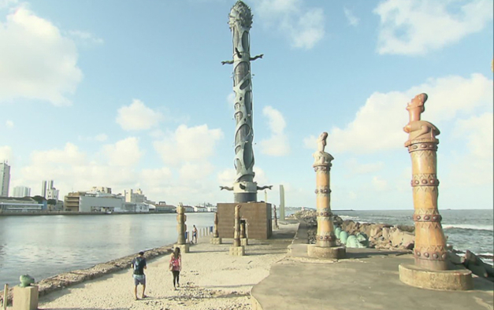
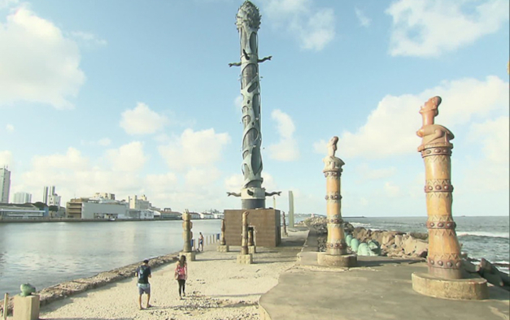
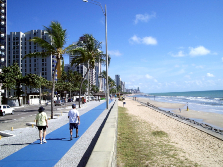
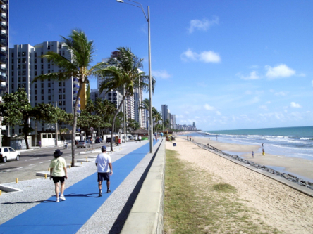

Seja bem-vindo ao blog
Turistando por Recife
Aqui, você poderá conhecer mais a história de Recife, a capital do estado de Pernambuco, no nordeste do Brasil, além de preparar a sua visita à cidade e aos seus principais pontos turísticos.
 

 

Embarque conosco e venha saber mais sobre o Centro de Artesanato de Pernambuco, o Marco Zero, o Armazéns do Porto, a Embaixada de Pernambuco dos Bonecos Gigantes de Olinda e o Parque das Esculturas Francisco Brennand.